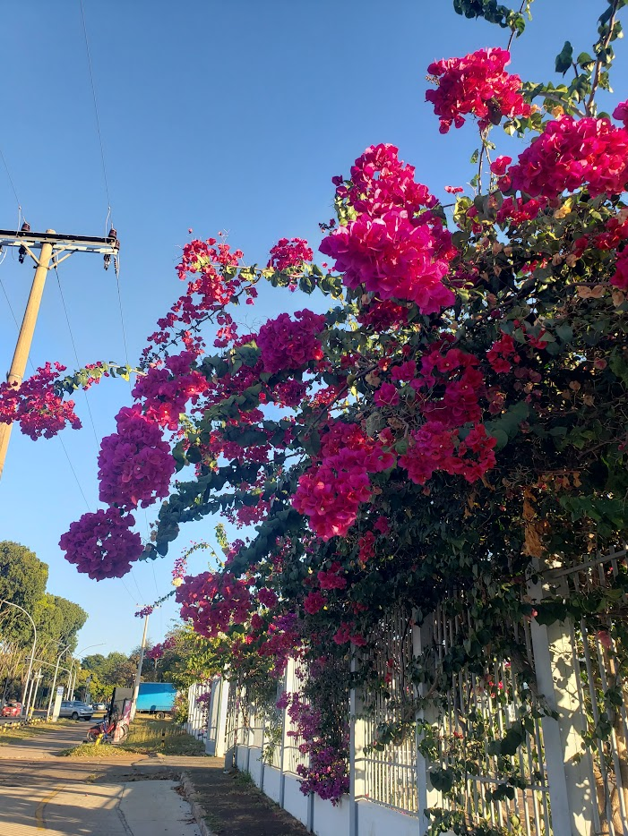

Sou aluna do quarto semestre de Ciência da Computação. Estudei no SESI Senai e me considero fluente em inglês, apesar do constante aprendizado. Amo tudo que envolve criatividade e arte, e apesar de ter entrado na área de Computação por "acaso", desejo me aprofundar e encontrar uma área que tenha a ver comigo. Não me considero ser de Exatas, e minha matéria preferida na escola era História. Tenho certa fascinação por Sistemas Digitais, apesar de entender pouco de Hardware. CSS foi o meu primeiro inimigo na programação, mas estou disposta a fazer as pazes com ele nesta matéria.
Nas horas vagas, sou:
Uma das minhas músicas favoritas do momento: "Dive" do Ed Sheeran (Cover da Ellie Banke)
Essa é uma das várias Bouganvilles que existem no CEUB. São minhas flores favoritas, especialmente as laranjas (que são raras e lindíssimas!).
Eis algumas curiosidades:
Minha cor favorita é laranja. nunca provei sushi, e amo teatro musical!